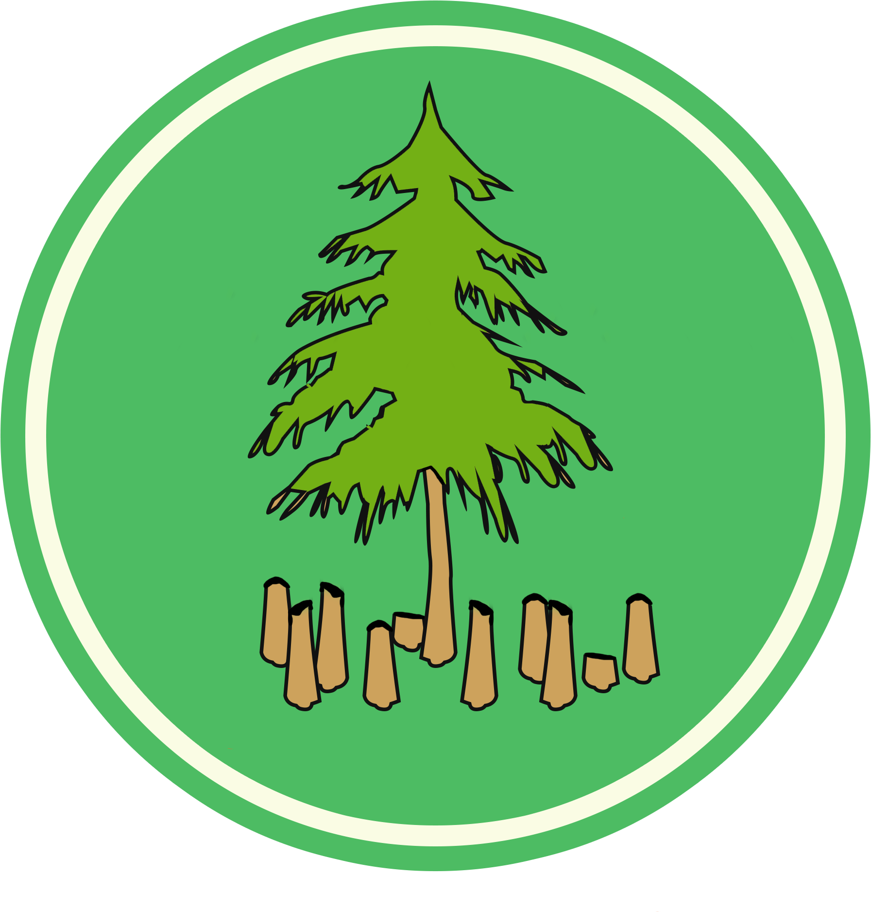

Threats
Logging

Deforestation
Wildfires
Logging
Illegal logging is the leading cause of forest degradation worldwide and contributes to global warming. In 2013, for example, it resulted in an estimated 190 million tons of carbon dioxide released into the atmosphere. The practice also threatens critically endangered species, including orangutans and Siberian tigers, as well as local people, with impacts ranging from loss of livelihoods and land to endangerment to their lives.
Logging operations, which provide the world’s wood and paper products, also cut countless trees each year. Loggers, some of them acting illegally, also build roads to access more and more remote forests—which leads to further deforestation. Forests are also cut as a result of growing urban sprawl as land is developed for dwellings.
DeForestation
Deforestation is clearing Earth's forests on a massive scale, often resulting in damage to the quality of the land. Forests still cover about 30 percent of the world’s land area, but swaths half the size of England are lost each year.
The world’s rain forests could completely vanish in a hundred years at the current rate of deforestation.
The biggest driver of deforestation is agriculture. Farmers cut forests to provide more room for planting crops or grazing livestock. Often, small farmers will clear a few acres by cutting down trees and burning them in a process known as slash and burn agriculture.
Deforestation also drives climate change. Forest soils are moist, but without protection from sun-blocking tree cover, they quickly dry out. Trees also help perpetuate the water cycle by returning water vapor to the atmosphere. Without trees to fill these roles, many former forest lands can quickly become barren deserts.
Removing trees deprives the forest of portions of its canopy, which blocks the sun’s rays during the day, and holds in heat at night. This disruption leads to more extreme temperature swings that can be harmful to plants and animals.
Wildfires
Wildfires are a large, destructive fire that spreads quickly over woodland or brush.
They directly impact on upland ecosystem services through damage caused to the vegetation, peat and soils, which results in loss of valuable habitat and associated wildlife alongside carbon release. Exposed soil and peat is at increased risk to wind and water erosion, with water run-off from uplands potentially resulting in downstream flooding, sedimentation of water courses and discolouration of drinking water.